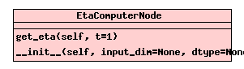

Class EtaComputerNode
source code

Compute the eta values of the normalized training data.
The delta value of a signal is a measure of its temporal
variation, and is defined as the mean of the derivative squared,
i.e. delta(x) = mean(dx/dt(t)^2). delta(x) is zero if
x is a constant signal, and increases if the temporal variation
of the signal is bigger.
The eta value is a more intuitive measure of temporal variation,
defined as
eta(x) = T/(2*pi) * sqrt(delta(x))
If x is a signal of length T which consists of a sine function
that accomplishes exactly N oscillations, then eta(x)=N.
EtaComputerNode normalizes the training data to have unit
variance, such that it is possible to compare the temporal
variation of two signals independently from their scaling.
Reference: Wiskott, L. and Sejnowski, T.J. (2002).
Slow Feature Analysis: Unsupervised Learning of Invariances,
Neural Computation, 14(4):715-770.
Important: if a data chunk is tlen data points long, this node is
going to consider only the first tlen-1 points together with their
derivatives. This means in particular that the variance of the
signal is not computed on all data points. This behavior is
compatible with that of SFANode.
This is an analysis node, i.e. the data is analyzed during training
and the results are stored internally. Use the functions
'get_eta' to access them.
__init__(self,
input_dim=None,
dtype=None)
(Constructor)
| source code |
None
-
|
Return the eta values of the data received during the training
phase. If the training phase has not been completed yet, call
stop_training.
Input arguments:
t -- Time units (e.g., t=0.01 if you sample at 100Hz)
-
|